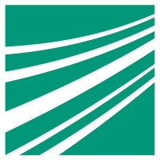
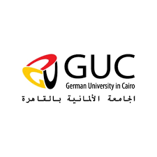
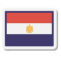

About Me
Software engineer with 3+ years in aerospace and defense industry, specializing in high-performance C++ systems. Experienced across the USA and Germany, now focused on applying low-latency systems expertise to quantitative and financial technology.
Experience
This is a summary of relevant work experience. For a more detailed timeline check my LinkedIn account.
General Atomics ASI
June 2022 - February 2025
I worked at GA-ASI as a software engineer for more than two and a half years, and there I gained valuable experience in the aerospace industry. This position gave me exposure to working with large production-level code bases, and corresponding debugging. I gained experience with C/C++ and Python in a Linux environment.
Fraunhofer Society
December 2021 - May 2022

At the Fraunhofer society for six months I conducted my master thesis titled "Improved Vital Sign Detection Using Millimeter Wave Radars". MATLAB and Simulink were used to simulate the signal processing algorithms and interact with real radar hardware.
Hensoldt Optronics
April 2021 - September 2021
I had a six-month internship as a software engineer at Hensoldt Optronics where I worked on the development and deployment of deep learning applications using TensorRT and C++. Already-trained deep neural networks were processed for them to be deployed on real hardware.
Tech. Uni. of Munich
June 2022 - February 2025
I did an exchange semester at TUM university where I wrote my bachelor thesis titled "Invariance Control for Balance of Legged Robots in 3D". This included the enhancement of balance control algorithms for legged robots and was done on MATLAB and Simulink.
Education
University of Stuttgart
October 2019 - May 2022

At the University of Stuttgart, I did my postgraduate degree in Information Technology (INFOTECH) and specialized in Embedded Systems Engineering. My studies were funded by a scholarship from the DAAD, owing to academic merit. I did an internship at the company Hensoldt, and in the following semester I wrote my master's thesis at the Fraunhofer society. Living and working in Germany for over two and a half years allowed me to become fluent in German; a skill I'm proud of.
German Uni. in Cairo
October 2014 - September 2019

I earned my undergraduate degree in Mechatronics Engineering from the GUC, where my studies emphasized a combination of mechanical, electrical, and computer engineering. I was given a scholarship to do an exchange semester at the Technical University of Munich to write my bachelor's thesis. I graduated valedictorian of my class; a proud achievement.
Languages
English:
Fluent
Primary professional language; practically a native speaker.
German:
Intermediate
Conversational level; can manage discussions comfortably.

Arabic:
Fluent
My native language; Egyptian dialect; capable of Modern Standard Arabic.
Contact Me
You can email me or reach out through my LinkedIn account.